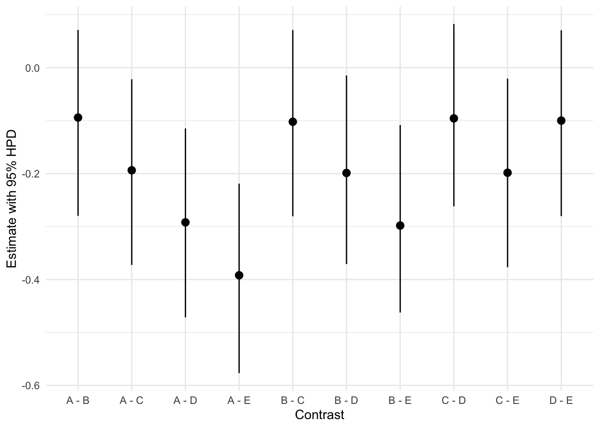

# Load packages
library(MASS)
library(tidyverse)
library(viridis)
library(brms)
library(emmeans)
# Set the default ggplot theme
theme_set(theme_minimal())Pairwise comparisons
This section is about different statistical techniques to analyze group differences.
Bayesian
Pairwise comparisons
In this scenario we simulate data from a study with 5 different groups. The conditions differ from each by a small amount and for simplicity’s sake each condition has a standard deviation of 1. The sample size per condition is 250.
# Set the simulation parameters
Ms <- c(0, 0.1, 0.2, 0.3, 0.4)
SDs <- 1
n <- 250
# Produce the variance-covariance matrix
Sigma <- matrix(
nrow = length(Ms),
ncol = length(Ms),
data = c(
SDs^2, 0, 0, 0, 0,
0, SDs^2, 0, 0, 0,
0, 0, SDs^2, 0, 0,
0, 0, 0, SDs^2, 0,
0, 0, 0, 0, SDs^2
)
)
# Simulate the values
m <- mvrnorm(n = n, mu = Ms, Sigma = Sigma, empirical = TRUE)
# Prepare the data by converting it to a data frame and making it tidy
colnames(m) <- c("A", "B", "C", "D", "E")
data <- as_tibble(m)
data <- pivot_longer(
data = data,
cols = everything(),
names_to = "condition",
values_to = "DV"
)
data <- mutate(data, id = 1:n(), .before = condition)To perform the pairwise comparisons we first fit a model with brms. If we also want to calculate Bayes factors, we need to set a prior for the intercept. For technical reasons, this needs to be done by explicitly including the intercept in the formula. After that we need to set 3 priors: 1 for the intercept, 1 for all the other coefficients, and one for sigma. We’ll set some weak priors because we don’t have any additional information about this simulated data.
model <- brm(
formula = DV ~ 0 + Intercept + condition,
data = data,
family = gaussian(),
prior = c(
set_prior(coef = "Intercept", prior = "normal(0, 1)"),
set_prior(class = "b", prior = "normal(0, 1)"),
set_prior(class = "sigma", prior = "normal(1, 1)")
),
sample_prior = TRUE
)Compiling Stan program...Start sampling
SAMPLING FOR MODEL '26506c9e129ffc36bd1658ecb9d890c1' NOW (CHAIN 1).
Chain 1:
Chain 1: Gradient evaluation took 2.9e-05 seconds
Chain 1: 1000 transitions using 10 leapfrog steps per transition would take 0.29 seconds.
Chain 1: Adjust your expectations accordingly!
Chain 1:
Chain 1:
Chain 1: Iteration: 1 / 2000 [ 0%] (Warmup)
Chain 1: Iteration: 200 / 2000 [ 10%] (Warmup)
Chain 1: Iteration: 400 / 2000 [ 20%] (Warmup)
Chain 1: Iteration: 600 / 2000 [ 30%] (Warmup)
Chain 1: Iteration: 800 / 2000 [ 40%] (Warmup)
Chain 1: Iteration: 1000 / 2000 [ 50%] (Warmup)
Chain 1: Iteration: 1001 / 2000 [ 50%] (Sampling)
Chain 1: Iteration: 1200 / 2000 [ 60%] (Sampling)
Chain 1: Iteration: 1400 / 2000 [ 70%] (Sampling)
Chain 1: Iteration: 1600 / 2000 [ 80%] (Sampling)
Chain 1: Iteration: 1800 / 2000 [ 90%] (Sampling)
Chain 1: Iteration: 2000 / 2000 [100%] (Sampling)
Chain 1:
Chain 1: Elapsed Time: 0.066951 seconds (Warm-up)
Chain 1: 0.063802 seconds (Sampling)
Chain 1: 0.130753 seconds (Total)
Chain 1:
SAMPLING FOR MODEL '26506c9e129ffc36bd1658ecb9d890c1' NOW (CHAIN 2).
Chain 2:
Chain 2: Gradient evaluation took 1.7e-05 seconds
Chain 2: 1000 transitions using 10 leapfrog steps per transition would take 0.17 seconds.
Chain 2: Adjust your expectations accordingly!
Chain 2:
Chain 2:
Chain 2: Iteration: 1 / 2000 [ 0%] (Warmup)
Chain 2: Iteration: 200 / 2000 [ 10%] (Warmup)
Chain 2: Iteration: 400 / 2000 [ 20%] (Warmup)
Chain 2: Iteration: 600 / 2000 [ 30%] (Warmup)
Chain 2: Iteration: 800 / 2000 [ 40%] (Warmup)
Chain 2: Iteration: 1000 / 2000 [ 50%] (Warmup)
Chain 2: Iteration: 1001 / 2000 [ 50%] (Sampling)
Chain 2: Iteration: 1200 / 2000 [ 60%] (Sampling)
Chain 2: Iteration: 1400 / 2000 [ 70%] (Sampling)
Chain 2: Iteration: 1600 / 2000 [ 80%] (Sampling)
Chain 2: Iteration: 1800 / 2000 [ 90%] (Sampling)
Chain 2: Iteration: 2000 / 2000 [100%] (Sampling)
Chain 2:
Chain 2: Elapsed Time: 0.065013 seconds (Warm-up)
Chain 2: 0.066012 seconds (Sampling)
Chain 2: 0.131025 seconds (Total)
Chain 2:
SAMPLING FOR MODEL '26506c9e129ffc36bd1658ecb9d890c1' NOW (CHAIN 3).
Chain 3:
Chain 3: Gradient evaluation took 1.4e-05 seconds
Chain 3: 1000 transitions using 10 leapfrog steps per transition would take 0.14 seconds.
Chain 3: Adjust your expectations accordingly!
Chain 3:
Chain 3:
Chain 3: Iteration: 1 / 2000 [ 0%] (Warmup)
Chain 3: Iteration: 200 / 2000 [ 10%] (Warmup)
Chain 3: Iteration: 400 / 2000 [ 20%] (Warmup)
Chain 3: Iteration: 600 / 2000 [ 30%] (Warmup)
Chain 3: Iteration: 800 / 2000 [ 40%] (Warmup)
Chain 3: Iteration: 1000 / 2000 [ 50%] (Warmup)
Chain 3: Iteration: 1001 / 2000 [ 50%] (Sampling)
Chain 3: Iteration: 1200 / 2000 [ 60%] (Sampling)
Chain 3: Iteration: 1400 / 2000 [ 70%] (Sampling)
Chain 3: Iteration: 1600 / 2000 [ 80%] (Sampling)
Chain 3: Iteration: 1800 / 2000 [ 90%] (Sampling)
Chain 3: Iteration: 2000 / 2000 [100%] (Sampling)
Chain 3:
Chain 3: Elapsed Time: 0.064023 seconds (Warm-up)
Chain 3: 0.060927 seconds (Sampling)
Chain 3: 0.12495 seconds (Total)
Chain 3:
SAMPLING FOR MODEL '26506c9e129ffc36bd1658ecb9d890c1' NOW (CHAIN 4).
Chain 4:
Chain 4: Gradient evaluation took 1.3e-05 seconds
Chain 4: 1000 transitions using 10 leapfrog steps per transition would take 0.13 seconds.
Chain 4: Adjust your expectations accordingly!
Chain 4:
Chain 4:
Chain 4: Iteration: 1 / 2000 [ 0%] (Warmup)
Chain 4: Iteration: 200 / 2000 [ 10%] (Warmup)
Chain 4: Iteration: 400 / 2000 [ 20%] (Warmup)
Chain 4: Iteration: 600 / 2000 [ 30%] (Warmup)
Chain 4: Iteration: 800 / 2000 [ 40%] (Warmup)
Chain 4: Iteration: 1000 / 2000 [ 50%] (Warmup)
Chain 4: Iteration: 1001 / 2000 [ 50%] (Sampling)
Chain 4: Iteration: 1200 / 2000 [ 60%] (Sampling)
Chain 4: Iteration: 1400 / 2000 [ 70%] (Sampling)
Chain 4: Iteration: 1600 / 2000 [ 80%] (Sampling)
Chain 4: Iteration: 1800 / 2000 [ 90%] (Sampling)
Chain 4: Iteration: 2000 / 2000 [100%] (Sampling)
Chain 4:
Chain 4: Elapsed Time: 0.062924 seconds (Warm-up)
Chain 4: 0.06255 seconds (Sampling)
Chain 4: 0.125474 seconds (Total)
Chain 4: model Family: gaussian
Links: mu = identity; sigma = identity
Formula: DV ~ 0 + Intercept + condition
Data: data (Number of observations: 1250)
Draws: 4 chains, each with iter = 2000; warmup = 1000; thin = 1;
total post-warmup draws = 4000
Population-Level Effects:
Estimate Est.Error l-95% CI u-95% CI Rhat Bulk_ESS Tail_ESS
Intercept 0.00 0.06 -0.11 0.12 1.00 1318 2081
conditionB 0.09 0.09 -0.07 0.27 1.00 1699 2226
conditionC 0.20 0.09 0.03 0.36 1.00 1695 2561
conditionD 0.29 0.09 0.13 0.46 1.00 1869 2470
conditionE 0.39 0.09 0.22 0.57 1.00 1865 2380
Family Specific Parameters:
Estimate Est.Error l-95% CI u-95% CI Rhat Bulk_ESS Tail_ESS
sigma 1.00 0.02 0.96 1.04 1.00 2851 2421
Draws were sampled using sampling(NUTS). For each parameter, Bulk_ESS
and Tail_ESS are effective sample size measures, and Rhat is the potential
scale reduction factor on split chains (at convergence, Rhat = 1).The estimates range, as expected, from 0 for the intercept to 0.40 for condition E.
If we want pairwise comparisons, we can use the emmeans package to obtain them. We use the emmeans() function and set the specs argument to pairwise ~ condition. pairwise is a reserved term to use for exactly this purpose. The result is an object that contains estimated marginal means and contrasts. Since we’re interested in the pairwise comparisons we only print the contrasts.
emmeans <- emmeans(model, specs = pairwise ~ condition)
contrasts <- emmeans$contrasts
contrasts contrast estimate lower.HPD upper.HPD
A - B -0.0946 -0.273 0.0652
A - C -0.1951 -0.370 -0.0376
A - D -0.2940 -0.460 -0.1246
A - E -0.3939 -0.560 -0.2216
B - C -0.0998 -0.273 0.0722
B - D -0.1986 -0.384 -0.0246
B - E -0.3002 -0.470 -0.1280
C - D -0.0995 -0.279 0.0813
C - E -0.1997 -0.365 -0.0218
D - E -0.1024 -0.270 0.0893
Point estimate displayed: median
HPD interval probability: 0.95 This gives us the estimates as well as lower and upper bounds of a highest probability density intervals. We can also plot them using the following code.
contrasts <- as_tibble(contrasts)
ggplot(contrasts, aes(x = contrast, y = estimate)) +
geom_pointrange(aes(ymin = lower.HPD, ymax = upper.HPD)) +
labs(x = "Contrast", y = "Estimate with 95% HPD")
emmeansAlternatively, we can also calculate specific contrasts using the hypothesis() function from brms. The added value of calculating contrasts this way is that it also provides us with a Bayes factor if we set priors for all parts of the model.
For example, we can get the contrast between condition A and B by subtracting the Intercept from the condition B coefficient. We can then get an evidence ratio for the test that this value is larger than 0. This value is simply the ratio of the number of samples larger (or smaller) than a value to the number of samples smaller (or larger) than the value.
contrast_A_B <- hypothesis(model, "conditionB - Intercept > 0")
contrast_A_BHypothesis Tests for class b:
Hypothesis Estimate Est.Error CI.Lower CI.Upper Evid.Ratio
1 (conditionB-Inter... > 0 0.09 0.14 -0.13 0.31 2.94
Post.Prob Star
1 0.75
---
'CI': 90%-CI for one-sided and 95%-CI for two-sided hypotheses.
'*': For one-sided hypotheses, the posterior probability exceeds 95%;
for two-sided hypotheses, the value tested against lies outside the 95%-CI.
Posterior probabilities of point hypotheses assume equal prior probabilities.# sum(contrast_A_B$samples$H1 > 0) / sum(contrast_A_B$samples$H1 < 0)This gives us an estimate of 0.1 (as expected) and an evidence ratio of 2.9408867.
We can also test whether this contrast is equal to 0. This is a Bayes factor computed via the Savage-Dickey density ratio method. That is, the posterior density at a point of interest is divided by the prior density at the same point.
contrast_A_B_null <- hypothesis(model, "conditionB - Intercept = 0")
contrast_A_B_nullHypothesis Tests for class b:
Hypothesis Estimate Est.Error CI.Lower CI.Upper Evid.Ratio
1 (conditionB-Inter... = 0 0.09 0.14 -0.18 0.35 8.24
Post.Prob Star
1 0.89
---
'CI': 90%-CI for one-sided and 95%-CI for two-sided hypotheses.
'*': For one-sided hypotheses, the posterior probability exceeds 95%;
for two-sided hypotheses, the value tested against lies outside the 95%-CI.
Posterior probabilities of point hypotheses assume equal prior probabilities.This gives us a Bayes factor of 8.2376557.
Alternatively, we can compare another contrast, say, D vs. B. We can get this contrast by subtracting the coefficient for condition B from the coefficient for condition D.
contrast_D_B <- hypothesis(model, "conditionD - conditionB > 0")
contrast_D_BHypothesis Tests for class b:
Hypothesis Estimate Est.Error CI.Lower CI.Upper Evid.Ratio
1 (conditionD-condi... > 0 0.2 0.09 0.05 0.36 65.67
Post.Prob Star
1 0.98 *
---
'CI': 90%-CI for one-sided and 95%-CI for two-sided hypotheses.
'*': For one-sided hypotheses, the posterior probability exceeds 95%;
for two-sided hypotheses, the value tested against lies outside the 95%-CI.
Posterior probabilities of point hypotheses assume equal prior probabilities.As expected, we see an estimate of 0.2 (0.4 - 0.2). We also see an evidence ratio of 65.6666667 for the hypothesis that this is larger than 0.